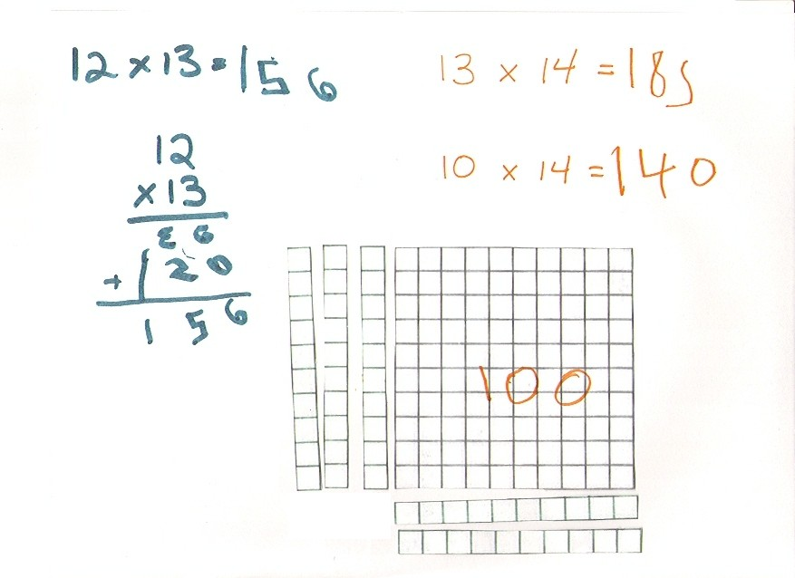

Don works with Justin, age 6, via his Mom Valerie, by email, from the Marshall Islands (south Pacific)
See 7 January Valerie to Don: below, for Justin multiplying 12x13 in his head, with squares and strips that Don sent him
18
December 2003, Don received this email: " My 6 year old son, Justin, lives math all day long. He amuses himself by making up problems and seems to see the world through math. He is finishing up 3rd gradeValerie has a new scanner hooked up, and sent Don Justin's work starting 20 December, 2003. They can't get the sound or video to work.
28 December, Don received this email from Valerie, Justin's Mom (she also sent this file while she and Don were in Instant Messenger- the first one!): "Justin�s very excited about �Sheri�s Magic Cards� and binary numbers today. We spent a little time playing with each. He made a chart of binary numbers up to 16 and translated �35� into binary [he added 32+2+1, so 35 (ten)=100011(two).
Later he made puzzles for me which required solving binary math problems. He figured out what �1001� and �0110� were in decimal and then wanted me to translate decimal 1000 into binary. Once he saw how the pattern of place values went up to 1000 he was able to translate 1025 and 1023 into binary. He was delighted to be able to solve �big� numbers. He wants to demo the trick and his new binary skills for his father in a bit here. I�ll try and send you a couple of samples".
29
December,
Don received this email from Valerie: "I
have made a crude peg puzzle and tower puzzle which Justin had great fun
stumping his father with! We�ve played with both but have not done any of the
associated math yet. I�ve got copies of the graph
paper and index cards.
After running through the
sound diagnostics, it appears to be another firewall issue, but I�ll keep
working on it".
2 January, Don received an email from Valerie. Justin made cards for the Magic Number Game in base 3. You pick a number from 1 to 15, using the 5 cards below:
A B C D E
1 10 2 11 3 12 6 15 9 137 8 5 14 8 11 15
12
And it works! Good job Justin!
2 January 2004
After a first try,
"Here are copies of our
work today with 12- dot circles:
Justin found the perimeter and diameter of a triangle and square within a 12 point circle. (Triangle perimeter = 21mm, diameter = 7.8mm, ratio = 2.7; Square perimeter = 22mm, diameter = 7.8mm, ratio = 2.8)
Justin found the perimeter
and diameter for a six and 12 sided polygon (6 sided � perimeter = 24mm, ratio =
3.1; 12 sided � perimeter = 24mm, ratio = 3.1)
We plotted the P/D ratios
from above and talked about how they would get closer and closer to 3.14 for
polygons with more sides.
We spent a
little bit of time talking about angles and # of degrees in a circle.
Valerie
3 January 2004 Don wrote to Valerie : "Valerie, how much of the division, P/D in each case, did Justin do? Don"
3 January 2004 �I�ve been letting Justin enter the division problems into a calculator. He has not done division with decimals before (or other work with decimals except as money). Also, this is his first practical use of a calculator. I figured that it allowed him to keep the continuity of the overall question in mind rather than getting too bogged down along the way. Valerie�
3 January 2004 �Hi, Here�s the work we did today:
Justin continued the base 3 chart to extend it to numbers 16 through 27. He seemed to have the hang of it this time and filled it in easily.
Justin added the new numbers (16 � 27) to his base 3 magic cards. He added 2 new cards � 1 for 2�s in the 3 column and one for 27. (I�ve scanned the first 4 cards here together with column 1 = card A, col. 2 = card B, col. 3 = card C, and col. 4 = card D)
Justin�s base 3 magic cards for numbers up through 27 (col. 1 = card E, col. 2 = card F, and col. 3 = card G). Justin had me pick numbers a few times to show me how quickly he could figure out my number.
We played about a bit with the idea of square roots. Justin used a calculator to make guesses at what the square root of each number was. We tried to work on narrowing down guesses by bounding the answer on the high and low side.
[Don had to read Justin's numbers carefully because he reverses some digits; but that's alright for a 6 year-old. Don hasn't found any adults that reverse their digits].
Justin then picked 1000 for me to find the square root of. He helped me make guesses and we narrowed it down, but he was surprised to find that the answer wasn�t a whole number. We pursued the answer a bit into decimals, but Justin is a bit unsure still about the whole concept of decimals particularly beyond the first digit. We checked to see what the computer calculated as the answer and compared it to our guesses.
Later in the day we got to playing around with graphing (xylem=4, and x+y=6). After graphing the combinations that add up to 6 (based on combinations of m&m�s he could come up with while eating them!), Justin related the type of line he got back to the equations from Chapter 6. We re-wrote the equation to �y = -1 x + 6� and he was able to see the negative 1 slope and the +6 y-intercept of the line we�d come up with. Valerie�
5 January 2004 Don to Valerie:
Valerie, you
and Justin are doing fine.
The Magic number in base 3 looks fine.
One comment about writing down the numbers for say, the square root of 2 (see p.
A211)..I would recommend writing down the guesses like this (getting the numbers
to the nearest tenth, hundredth, thousandth...) narrowing down the answer.
Too big -> 2, 1.5, 1.42, 1.415 , ...
Too small -> 1, 1.4, 1.41, 1.414 , ...
then one can see that you are getting 2 infinite sequences, each approaches the
square root of 2, one from below, the other from above. You can even square the
number to see if you get 2. The danger of this is that the calculator will say 2
at some point because it will round off. If you use Derive or
Mathematica, going out more places, you will see that you never get to 2.
The graphs look fine (why not use copies of the 1/2" graph paper in the
appendix?) Don't forget to have him get two numbers for points in-between whole
numbers, like
(4 1/2, 1
1/2). Slope and intercept are important, that's great. Does he see the patterns
in the graphs for 2x + 3 = y and 2x + 5 = y, and 5x + 3 = y ? Have him make up
a graph for me to figure out the equation. Always do things forward as well as
backward! I use 2x+3=y because in the table of numbers we write (x,y) and the x
here comes first.
I like the way you are using the calculator for finding the square root of 1000.
Attached is one way I help kids do the decimals - if the large square (100
little squares) is 0ne (1), then what is the 1x10 strip?, what is one little
square? Of course you can use money as well. Using the square and strips I get
them to multiply 12x13 in their heads.
Keep up the fine work, Valerie and Justin!
Sincerely, Don
6 January: Valerie�s email to Don: �Thanks for the suggestions. We�ll take a look at some of those tomorrow. I particularly like the suggestion to use non-whole numbers in the graphing exercise. I�m sure Justin will grasp fractions/decimals more quickly if I don�t shy away from using them with him. Here�s a bit of what we did today.
We started looking a bit at solving some of the equations from your book. I was hoping to tie it into the �solving by guessing� work we�d done on square roots, but Justin mostly wanted to �think� about each equation to come up with the answer. He did have trouble when he incorrectly figured 17 � 5 = 11 and came up with �3 remainder 2� for the answer (actually 9 remainder 2 as he knew 3 x 3 was the biggest multiple of 3 that he could get out of 11 and used the 9 instead of the 3). We were able to see that 9 didn�t make much sense and guessed 3 and then 4 to get the right answer and then discover his mistake.
Justin wanted to do a subtraction equation for a change which he solved easily. I tried giving him one with variables on both sides, and he had forgotten how to solve it. Once I reminded him about thinking of a scale and doing the same thing to both sides, he was able to get the answer. I wanted to pursue equations with non-whole number answers as well as equations with infinite answers, but he was more interested in other activities instead. Valerie"
[See Don's work on solving equations by guessing first, then on to the balance pictures in chapter 8].
7 January 2004
Don to
Valerie:
"Valerie, Do you think our email conversations are alright for me to put on my
website? Obviously I think they show your resourcefulness and not being afraid
to try things. Of course you have a good math background also. If you want me
to delete anything or add anything, please let me know. I just wanted to get
your feedback. I will add more of Justin's work as time permits.
See the scale I use in ch. 8, with the "bags of washers" for x and numbers are
the loose washers, p 153. see how he likes that model. Keep up the great work.
Don"
7 January Valerie to Don: "The website looks great. Justin is very proud to see that what he is doing is important enough to be on the website. I am also eager to point interested friends (many at this point � they want me to do a presentation at our next home school meeting) and relatives in the direction of the website so they can see what we�re up to � and see that it�s do-able by any of the kids. Please include e-mails or anything you feel is helpful to showing what he�s doing.
Here�s what
we worked on today �
Justin and I
both had fun trying out the method of multiplying mentally by making
rectangles. Justin caught on quickly and was able to manipulate the shapes to
solve 12 x 13, 13 x 14, and 10 x 14. He checked the first one using the long
method and decided he much preferred the new method! I didn�t have him try it
completely mentally; although he was able to mentally visualize the missing
blocks and in the case of the second problem added the 12 invisible blocks to
the 170 mentally.

Justin does multiplication problems daily but relies heavily on look-up tables as he does not have the facts memorized. I thought it might be helpful to show him that he could visualize smaller rectangles to solve single digit problems. We introduced a 5 x 5 square made up of 25 blocks, and he was able to solve problems such as 5 x 5, 7 x 5, 6 x 8, 5 x 8, 6 x 8, and 7 x 8. We checked his answers using his look-up table. I�m not sure if he understood why we switched from the 10 x 10 square to the 5 x 5 square and wasn�t as impressed with being able to solve the �easy� problems. We attempted a 3 x 3 square, but he wasn�t strong enough in skip counting by 3�s and had lost interest in the method (or gotten confused by the different sized squares?).
We worked with the 100�s square to understand decimals. I tried to show him the place values for the decimals � tenths, hundredths, thousandths� He then colored in squares to represent 0.1, 0.01, 0.001, 0.2, 0.04, and 0.14. Then, based on your recommendation of doing things forwards and backwards, I suggested he color in squares and let me guess the decimal. He colored in 0.06 (with one block down in the far corner!) and then tried to stump me with 0.0011 (one-ninth of a square) and 0.0308 (3 squares plus one-twelfth of a square). I�d like to try tomorrow to color squares and see if he can supply the decimal. He still seems a bit shaky on the idea that 10 hundredths is the same as 1 tenth or being able to identify when a number is tenths or hundredths, but the exercise seemed to help his overall concept of decimals.
Things to work on�
1) Decimals � me coloring squares him supplying the number as well as reading decimal numbers
2) Square root 2 exercise showing 2 infinite series with �too big and too little�
3) Graphing � having Justin make up his own graphs for us to guess the equations and looking at non-whole number points
4) Equations � identities, equations with non-whole number solutions, solving by both guessing and scale method
Valerie"
8 January, Valerie to Don: "Don,
I really appreciate all the great ideas you�re giving me. It is nice to have more things to do with Justin than we�ve got time to do! So often I feel like I�m running out of new and interesting things to work on with him. I�m not ignoring the Ch. 1 and Ch. 2 exercises � just not sure where else to go with them beyond what we�ve done. Here�s a summary of some of the work we did previously.
Chapter 1 � Justin shaded in each fraction in the series � + � + 1/8 + � (Justinold0001). He was able to see that he�d never have the whole �cake� but that it would get very close to 1. We also came up with the total fraction of cake shaded in each step and graphed the totals on a cake to show that they approached 1.
Chapter 2 � Justin used 5 cards and tried to share them between 3 people. He gave each person 1 and cut the rest in �. He gave each 1 of the new pieces and had 1 left. He cut that one in half and seeing that he still didn�t have 3 then cut each of the strips into 3 pieces. We figured out that each had 1 + 8/12 (by dividing all the pieces into twelfths). We talked about 8/12 = 2/3. We divided out 2/3 using long division and found an infinite series to Justin�s delight! We also reworked the original problem dividing 5 cards between 3 and kept cutting each piece in two. He saw that it the problem became an infinite series.
Chapter 4 � Justin drew the snowflake curve Justinold0002). We discussed that each side was 1/3 of the last and practiced dividing by 3. We did not cover the ratios of perimeter or area.
Chapter 5 � Justin shaded in squares for the [harmonic series] � + 1/3 + � + 1/5 � (Justinold0003). We ran out of the first �cake� and added a second. He saw that we would keep needing more cake. We talked about how some series converge and some diverge.
Chapter 6 � Justin and I both spent several days creating function machines for each other and anyone else who would play (Justinold0004). We looked at the graphing and saw how making a small change (2x + 3, 2x + 1, 2x + 7) affected the graph (Justinold0005). He was able to complete page Q93. We also built and played with a Peg and Tower puzzle.
Here�s today�s work:
Justin01080001 � I colored in squares on the 100-square chart and Justin wrote down the corresponding decimals (he had an easier time saying the correct fraction than figuring out how to write what he said). We threw in a few tough ones at the end! Justin and I talked about how � of a dollar is like $.50, � is like $.75, and � of a dollar is like $.25.
Justin01080002 � We worked on finding the square-root of 2 using a calculator to check guesses and took it out to the ten-thousandths place (1.4142�). We also calculated on the computer to see that it would keep going (at least as far as we could tell).
Justin01080003 � Justin came up with a function for me which I wanted him to graph (Justin01080004). His function was �divide by 2 minus 2� but he had a little trouble calculating the output for me. We reworked the answers together to get the x/2 � 2 = y graph. He made one more for me (3x + 3) and was delighted when I guessed it based on the graph.
Thank you again for all your suggestions and ideas. I�m always looking for where to go next! Valerie"
8 January,
Don to Valerie: �Valerie,
you just never told me about ch 1 work, at least that I remember!
"Justin shaded in each fraction in the series � + � + 1/8 + � " did he look at
the partial sums? Did he graph the partial sums? Next try 1/3 + (1/3)^2 + ...
(make the square 9x9 to start). I'd like to see if he could generalize � + � +
1/8 + � ->1 and 1/3 + (1/3)^2 + ... -> ? and 1/4+(1/4)^2 + (1/4)^3 + ...-> ?
to 1/n + (1/n)^2 + ... -> ? and (a/b) + (a/b)^2 + (a/b)^3 + ... -> ? But only
you can see when he's ready. Then problems in ch. 1 can be done, as well as the
snowflake curve!.
On the cookies 2 things, it's important to get him to name the pieces and you
could get track of how many each person gets. So for 5 C, 3 P each person got 1,
then each person had 1 + 1/2 , then when he cut the leftover 1/2 into 3 pieces,
each new piece would be 1/6 (since 3 pieces make 1/2, 6 would make a whole
cookie, therefore each piece is 1/6). So each person would get 1 + 1/2 + 1/6 ,
now of course 1 + 1/2 + 1/6 = 1 + 8/12 = 1 + 2/3 = 5/3 . My question is how did
he come up with 12ths? I think doing it different ways is a key idea! "We also
reworked the original problem dividing 5 cards between 3 and kept cutting each
piece in two. He saw that it the problem became an infinite series". That's
great! Instead of cutting into 2 equal pieces, suppose you cut into 10 equal
pieces! Then what will he come up with? This gets more interesting as one goes
on!! He has a name for 2/3 = 8/12 and = 1/2 + 0/4+1/8+0/16+1/32+ ... (did you
put in the zero terms?) and equals 0.666666... and if you write the infinite
series as a bimal 1/2 + 0/4+1/8+0/16+1/32+ ... = .101010... (an infinite
repeating bimal), and you could write the infinite repeating decimal 0.6666...
as an infinite series 6/10+6/100+6/1000+... he might even become a member of
"The Order of Bimal" - those students (in IA) who multiplied 2 infinite series
together! ;-) Maybe 3 people that I know of are in that "Order".
On the Harmonic series, that is very slowly diverging. I had some kids go for
maybe 1000 terms added on the calculator and they were convinced it would go to
10 or 14. Then one of the parents had the use of a large computer and did it out
to 1 million terms, and it still kept increasing.
"He was able to complete page Q93 (the graphs)". Great!
The function stuff was fine! How about graphing x/2 - 2= y what's the slope and
intercept (he probably can do that now!)? and how about throwing in a quadratic
function at him, like #3 and #4 on p.88.
He knows 4-5= -1 and 4^2 = 16. He could make the picture of the square numbers,
see
Tara's work, and then you could start him
on quadratic equations (use the sequence of problems in my book!). You know you
can search my website on the main page. I just did that to find Tara's, my
granddaughter�s, work!
Got to go. Keep up the fine work, you two!!!
Sincerely, Don�
9 January Valerie to Don: "Justin0109001 � I tried a bit more to show Justin that � = .5 through the 100�s square, division, money, etc. While he seemed okay with it, I still don�t think the concept has really clicked for him. Maybe it will make more sense later on.
Justin0109002 � We had lots of fun making the chart of squares (like Tara's). First he calculated the square numbers (justin0109002) and then we colored in the chart. He quickly caught on that the number of squares colored was always the next odd number. He had a harder time realizing that the next total number of colored squares was the next square number (in fact, he was quicker to realize that it was the sum of all the odd numbers up to the current one which I hadn�t realized!).
We didn�t get to any of the work with equations that I�d planned today. We�ll work with some of the other infinite series as you suggested as soon as we get a chance! Thanks for all the ideas.
Valerie"
9
January 2004
Don to Valerie:
"I kept looking and thinking about the picture you made of the 5^2 +2x5 + 1 (and
got 6^2). Then I played around with that. I realized how to "complete the
square" with this model. If you had 5^2 + 2 strips on each side or 4 fives,
and there would be 4 invisibles in the corner. So 5^2 + 4x5 + 4 = 49=7^2. and
7^2 + 6 strips (3 strips on the two sides) + 9 = 10^2 = 7^2+6x7+9 = 49 + 42 + 9
= 100. Now the question is how does one get the adding number from the # of
strips? from 6 to 9, from 2 to 1...And 46^2 = 40^2 + 12x40 + 36 = 2116 !! If you
had x^2 + ax + _____ to get a perfect square? See the attached file.
OOOOOOOOhhhhhhhh goooood!!! Don"
10 January Valerie to Don: "I got your e-mail � so now I understand what you were referring to when we tried to �talk� yesterday. Yes, I am intrigued by the multiplying by squares. It does make sense that x2 + ax + (a/2)2 always equals another perfect square for all even numbers a � and much easier to visualize why after having done the multiplying by 1x10 strips! I do like being able to picture the problem that way when thinking of a problem.
Here�s what we did yesterday.
Justin01100001 - Justin created 2 function machines for me (difficult to read due to black writing on the back) and then graphed them (Justin01100004).
Justin01100002 - We looked at an equation in which x wasn�t a whole number as well as an identity. Justin used his scale method from Borenson�s which is very similar to the balance scale method described in your book.
Justin01100003 - Justin worked a 2 sided equation on his own. We worked a quadratic equation by guessing (unfortunately he guessed 2 first). He could use more practice on how to substitute numbers for variables to check his answers.
Today, Justin met me when I woke up with 2 pages of functions he�d made (doesn�t he know about weekends?) for me to guess. We worked them out and graphed them. They were good for giving him practice with negative numbers. We even got a chance to talk about 1/3 and 2/3 as infinite repeating decimals due to his divide by 3 machine! (Justin01110001 � 4) He was also intrigued today by the patterns of the 9 multiplication tables. He noticed that each answer was one less than the number being multiplied by and that the second number was nine minus the first. He was enthusiastic when I showed him that he could find the answers using his fingers by bending down the finger corresponding to the multiplier and using the number of fingers before for the first number of the answer and the number after for the second number. Valerie�
10 January Don to Valerie: �Valerie, "a" doesn't have to be even or even a whole number. I would start with that in teaching completing the square to my students because we can use the squares and strips to show it easily! ;-) Don�
As Valerie hinted x2 + ax + (a/2)2 = (x+a/2)2 .
In the case below x = 7, a = 6, a/2 = 3 and (a/2)2 =9
13
January Valerie to
Don: �Don,
We looked
back at some infinite series today. I introduced Justin to exponents
(Justin01130001) which fit in with the chart on squares we�d done last week. We
then looked at the set of series (1/x) + (1/x)^2 +
(1/x)^3 � We had done � previously so continued with 1/3 (below -> 1/2) and �
(Justin01130002 and Justin01130003). Justin guessed the pattern of how to
predict what the sum converges to before we�d even finished graphing �. He was
able to correctly predict where 1/5 would converge. We got caught up in seeing
where they were going and forgot to look at the partial sums. We�ll go back and
see if we can figure those out tomorrow as well as look at some other (A/B) type
series.
[Notice that Justin wrote that the series goes to 1/2.]
13 January
Don to Valerie: "Valerie, In filling in on the square paper, there was one
0.0011 (one-ninth of a square). This should be an infinite repeating decimal .00
1/9 (1/9 of one hundredth) = .00111...
When graphing, have Justin put about 8 points on the graph before drawing the
line; otherwise the line gets distorted when it is extended without the dots.
Especially when the slopes are the same and the lines are supposed to be
parallel. The important thing is to see the pattern of the dots. Give him a
graph with a slope of 2/3 to find the equation.
Please have him write in a darker pen/pencil; some of his work is a little
difficult to read. Don"
Keep up the great work Justin!!!
14 January Valerie to Don: �Don, Thanks for the feedback. Justin and I worked on finding the partial sums of the infinite series (1/x) + (1/x)2 + (1/x)3 + ... for �, 1/3, and �. He was able to see where each sum was converging, but other than the � series the partial sums didn�t mean much to him. We then played around with Excel entering values for A and B and set up columns to find the sum of (A/B) + (A/B)2 + (A/B)3 � We were able to find what various combinations of A and B converged/diverged to but had to peek in the book to see the pattern! Justin particularly liked the cases where A > B! We got sidetracked trying to figure out how many rows the Excel spreadsheet contained. Justin found that it ended at 65536, and we talked about the reasoning behind that value. We divided it out until we started to see our binary friends and determined that 65536 was the largest value for a 16 bit system (1 � 65536 instead of 0 to 65535). We then worked on filling all 65536 rows with various types of math problems!
Later Justin created a couple of pages of function machines for me to guess (justin01150001-3) which I graphed for him (justin01150004). They gave him great practice working with fractions! I then gave him a line with a slope of 2/3 to figure out, but he had a hard time figuring out what 2/3 of any number is (tried to show him with 3 and 6 but he didn�t know what to do with any of the in between values were as he doesn�t understand multiplying fractions). I did show him how the line went up 2 for every 3 it went over. Valerie�
16 January: "Don, Justin�s favorite game is still �Guess My Function�! Every time I turn around he has a couple more pages of functions for me to guess. He�s been trying to make them �extra-advanced level�! I�m sending a graph of 10 functions machines he made for me to solve in 10 minutes (justin01160002) as well as some lines I drew for him to guess the functions of (justin01160001). He was able to find the functions of each line; although the negative slopes gave him trouble for a little bit."
16 January Valerie to Don: "We
worked yesterday more on dividing cookies between people. He took 1 card to
divide between 5 people and cut it into eighths and then cut each of the
remaining eighths into 5 pieces and gave each person 3 of the 1/40ths (0/2 + 0/4
+ 1/8 + 3/40). Then we introduced the magic scissors that could only cut in 2
and got 0/2 + 0/4 + 1/8 + 1/16 + 0/32 + 0/64 + 1/128 + 1/256 + 0/512 + 0/1024�
Next we tried dividing 2 cards between 5 people using our special scissors and
got 0/2 + � + 1/8 + 0/16 + 0/32 + 1/64 + 1/128 + 0/256 + 0/512� I�ll have to
think about where to go from there � the bimals are
new to me!
17 January Don to Valerie:
�Hi Valerie, When Justin shared 1 cookie between 5 people, and cut them into
eighths, there is no need to keep track of 1/2's and 1/4's. I would have just
written 1/8 + 3/40. When he uses the special scissors that cut into 2 pieces,
then you want to keep track of 1/2's and 1/4's ... At some point you might want
him show these different ways to write
1/5 = 1/8 + 3/40 = 0/2 + 0/4 + 1/8 +
1/16 + 0/32 + 0/64 + 1/128 + 1/256 + 0/512 + 0/1024� =.001100110011... (as a bimal), = 2/10 = .2 = .20 = 20/100 = 20% =  =
1 � 5 , and what happens if your special scissors cut into only 3 pieces? 7
pieces? 10 pieces?..!!!
=
1 � 5 , and what happens if your special scissors cut into only 3 pieces? 7
pieces? 10 pieces?..!!!
See p. 52 in my worksheet book to see more about bimals.
How about asking Justin, "All the graphs and functions you have made so far are
linear, come out straight lines. What would you have to do to get a curve, a
non-linear function?" See if he can find a way to do this without Mom.
You two are doing fine!!! Sincerely, Don�
18 January 27, 2004
Don to Valerie: �Valerie,
'Justin and I
worked on finding the partial sums of the infinite series (1/x) + (1/x)2
+ (1/x)3 + � for �, 1/3, and �. He was able to see where each sum
was converging,'.. Take a look at what
Jeff
did on p. 29. When Justin can find equivalent fractions 2/4 = 1/2, he could
tell that 2/5 + (2/5)2 + (2/5)3 +... -> 2/3 because 2/5 =
1/2.5 -> 1/(2.5-1) = 1/1.5 = 2/3. A neat thing for a high school young man who
didn't care about math at all !
I was looking at the rules that Justin did like (0,0) and (1,10) , which I
assume is 10x=y, but it could be other rules, like x2 + 9x. That's
why I wanted to get him into non-linear functions.
When he's
ready.
Cordially, Don�
19 January Don to Valerie: �Valerie, The important thing about the functions are the differences. Linear functions, the first differences are constant, second degree function, the second differences are constant, and so on. Don�
20 January, Valerie to Don: Hi � Justin has been playing lots of the new board games that he got for Christmas. We were discussing which numbers we were �most likely� to get when rolling two dice playing Monopoly. We decided to look at which values were most likely for 1, 2, and 3 dice. Justin rolled the dice and logged the results and then we graphed them for each case (justin0117001-3). We then compared our results to what we would expect to get based on the number combinations (justin017004-6).
We�ll look at non-linear functions this week. I also just got your book �Changing Shape With Matrices� in the mail and am very eager to work on it with Justin.
Valerie
20 January, Don to Valerie: "Hi Valerie, When Justin can do the transformations on paper, he can look at the page on my website at http://www.mathman.biz/html/dogtrans6/changing_shapes_with_matrices%20ies6.html where the computer will do it for him, but it will go point by point. Don"
22 January,
Valerie to Don: "Don, Graph 6 was a graph of
the theoretical sums that could be gotten with 3 dice (i.e. 1,1,1 1,1,2
1,1,3� 6,6,6). To try to make it clearer with Justin (and because I didn�t want
to write down all the addition problems), I wrote down the combinations for the
first dice being �1� and then switched pen color to show if the first dice was a
�2�, �3� through �6�. We did a graph of all the possible combinations as the
rolling the dice seemed to take too long to average out.
Justin and I
started looking at matrices and played a bit with graphing and transforming his
shapes (Justin01220001-6). He was intrigued by seeing what would happen to his
shape, but I�ll have to read further in your book to answer his �whys� about
what happened. Valerie
26 January, Valerie to Don:
Dear Don,
Thank you so much
for all of your support and suggestions during the past month. You have
expanded our horizons and Justin has fallen in love with whole new areas of math
that I had no idea he was ready for. At this point, I would like to stop our
email studies with you until we are able to find a way around the internet
difficulties on our end or until Justin is able to communicate with you more
directly. I am most appreciative of the time you have put into helping us and
hope we will be able to work together in the future. I am particularly
interested in trying to schedule a trip to IL so Justin could work with you
directly.
Thanks again,
Valerie
26 January:
�Dear Valerie,
I appreciated working with you and Justin. You have done a wonderful job with
his math!
I would be glad to work with him in the future and it would be great if you
could bring him here to Champaign, IL (150 mi. south of Chicago). If possible,
the best time to come would be in the summer because then I have classes
mornings and afternoons; but you could bring him anytime.
Please keep in touch, and continue to send me his work. I will extend his page.
Sincerely, Don�
2 February: Don happened to meet Valerie on IM, she said she worked with about 20 homeschooling parents and children and did 1/2 + 1/4 + .. and showed them Don's book. "Justin still plays the function game all the time. He figured out on his own that if he comes up with a non-linear function then I can't guess it in two guesses!"